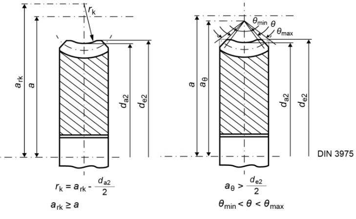

蜗杆几何尺寸依据 ISO 14521 或 DIN 3975 计算。确定蜗杆和蜗轮的控制测量值，制造公差依据 DIN 3974 或 AGMA 2111。
齿宽、中心距、导程角等的尺寸确定以及强度计算依据 ISO 14521 或 DIN 3996 进行。其中包括以下定义：效率、温度安全系数、点蚀安全系数、抗磨损安全系数、蜗杆的齿根与挠度安全系数。提供各种不同蜗轮材料的数据。
用户还可以计算负载下的启动扭矩，这是确定驱动装置尺寸时的一个关键值。
可以计算齿面形状：ZA、ZC、ZI、ZK、ZN（依据 ISO TR 10828:2015，相当于 A、C、I、K、N），ZH（等于 ZC）。显示的齿形（2D、3D）通过镜像半个齿面生成。
下图显示了蜗轮的尺寸标注。

图 18.1：蜗轮的尺寸标注
The worm geometry is calculated according to ISO 14521 or DIN 3975. Control measurement values for worms and worm wheels are determined, and manufacturing tolerances are according to DIN 3974 or AGMA 2111.
Sizing of facewidth, center distance , lead angle etc. as well as strength calculation is performed according to ISO 14521 or DIN 3996. This includes the definition of: efficiency, temperature safety, pitting safety, safety against wear, root and deflection safety of the worm. Data for various different worm wheel materials are supplied.
The user can also calculate the starting torque under load, which is a critical value when sizing drives.
Calculation of the flank forms can be performed: ZA, ZC, ZI, ZK, ZN (equivalent to A, C, I, K, N according to ISO TR 10828:2015), ZH (equals ZC). The displayed tooth form (2D, 3D) is generated by mirroring half a tooth flank.
The drawings below show the dimensioning of a worm wheel.
Figure 18.1: Dimensioning a worm wheel